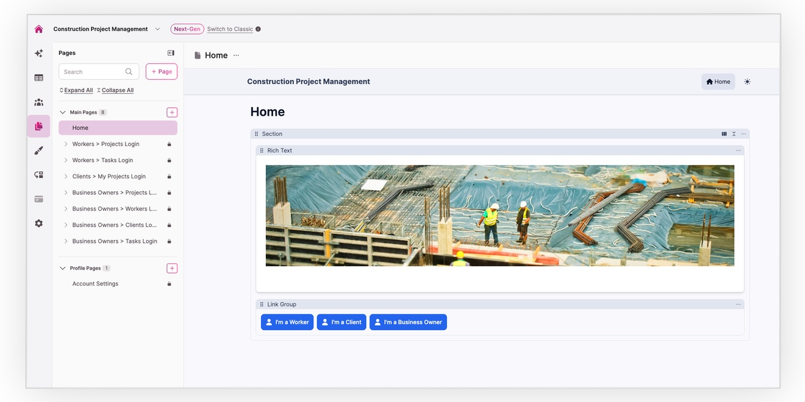
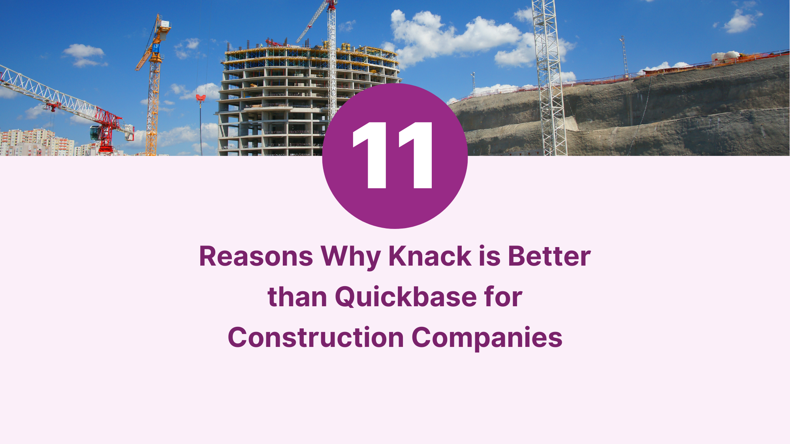

How Construction Companies Use Construction Management Software with Knack to Digitize Operations


Managing construction projects, subcontractors, equipment, and compliance is overwhelming when using paper or spreadsheets. With Knack’s no-code construction management software, you can build a custom solution that simplifies job scheduling, improves team communication, tracks materials in real time, and boosts overall project efficiency.
Streamline job assignments, track task progress, and ensure your team has the right resources at the right time. With advanced construction management software, leverage real-time data to prevent scheduling conflicts, optimize resource allocation, and ensure on-time project completion.
Track safety certifications, compliance documentation, and audit logs with automated alerts to ensure regulatory compliance. Keep your operations safe, transparent, and audit-ready.
Monitor materials and tools in real time to minimize errors, improve billing accuracy, and optimize inventory management, ensuring every project runs smoothly.
Integrate with tools like QuickBooks to automate invoicing, payment processing, and timesheet management. Simplify your financial operations while improving accuracy and efficiency.
Tailor workflows, task dependencies, and approval processes to fit your specific needs. Enable field teams with mobile access to update job statuses, submit timesheets, and track materials anytime, anywhere.
Sync seamlessly with billing and accounting systems like QuickBooks and automate critical processes. From dynamic scheduling to automated invoicing, Knack helps reduce errors and save time.

Streamline construction project oversight from planning to completion.
Effortlessly streamline property inspections; Real-time scheduling, detailed reporting, and seamless communication.
Simplify the way customers pay for services with a flexible billing app. From credit card payments to automated invoicing and service updates, everything runs smoothly—secure and built for your needs.
Paper-based systems and Excel spreadsheets often lead to lost information, miscommunication, and outdated data. Knack empowers you to manage jobs, tasks, and materials in real time, providing both office and field teams with instant access to updated information, all in one platform.
Knack offers the flexibility to tailor construction management software to the exact needs of your business. Traditional tools often come with predefined workflows and features that may not align with your unique operational requirements, forcing you to adapt your processes to fit their constraints. With Knack, you can easily customize workflows, add specific features, and create a system that fits perfectly with your team’s needs, without the limitations or high costs of custom development.
Field service operations require customized workflows, mobile access, and real-time updates. Knack’s flexible, no-code platform enables you to tailor job scheduling, subcontractor coordination, and financial management processes to meet the unique needs of each project and team member.
If traditional software, documents, and spreadsheets are causing you a load of problems, Knack is here to solve them.
Limited Real-Time Collaboration: Traditional solutions lack real-time updates, making it difficult for field teams and office staff to stay synchronized, leading to miscommunication, delays, and errors in critical project details.
Enhanced Real-Time Collaboration: Knack ensures real-time data synchronization, keeping field teams and office staff perfectly aligned. This seamless communication leads to faster decision-making and better project coordination, ensuring every team member is always on the same page.
Data Silos and Poor Accessibility: Information is often scattered across multiple tools, documents, or spreadsheets, preventing teams from accessing what they need quickly and slowing decision-making due to incomplete or outdated information.
Centralized and Accessible Data: With Knack, all your data is stored in one accessible platform, making it easy for teams to retrieve and share information quickly. This unified approach streamlines workflows and empowers your team to make informed, data-driven decisions.
Inadequate Scalability: Traditional systems struggle to scale as projects and teams grow, leading to inefficiencies and bottlenecks in managing larger workflows and datasets.
Scalable to Grow With You: Knack’s flexible architecture scales effortlessly as your projects and team grow. Whether managing more data or adding users, Knack adapts to your needs, ensuring your operations run smoothly no matter the size or complexity.
Error-Prone and Manual Processes: Manual entry in spreadsheets or basic software is prone to errors, causing mistakes in scheduling, cost tracking, or work orders that lead to costly delays, budget overruns, and dissatisfied clients.
Improved Accuracy Through Automation: Knack eliminates the risk of human error by automating routine tasks like work order assignments and status updates. This boosts efficiency and accuracy, giving your team more time to focus on what truly matters.
When selecting construction project management software, it’s essential to evaluate the core features that will help streamline operations, ensure smooth communication, and enhance overall project success. A well-rounded software solution should cover various aspects of project management, from planning and scheduling to real-time updates and resource allocation. Here are the key features to look for:
Construction project changes in scope are inevitable. A solid software solution should include change order management, enabling teams to track modifications to the original project plan, update budgets, and communicate changes to all stakeholders. This feature ensures that everyone is on the same page, minimizing delays and costly misunderstandings.
Visualizing project timelines is critical for managing complex construction projects. Gantt charts allow teams to see the entire project schedule, monitor task dependencies, and track progress against deadlines. This feature is essential for project managers to ensure that milestones are met and resources are used efficiently.
For large construction sites, understanding the geographical layout of the project is crucial. Map views provide a visual representation of the site, offering insights into task locations, resource distribution, and ongoing activities. This feature helps project managers monitor site progress in real-time and adjust plans when necessary.
Access to up-to-date project data is vital for informed decision-making. Real-time insights allow teams to track costs, labor, and material usage as the project progresses, ensuring that any potential issues are identified early. This feature helps prevent delays and ensures that the project stays within budget.
Efficient resource allocation is key to any successful construction project. Resource scheduling allows managers to assign the right workers, equipment, and materials to specific tasks, optimizing productivity and avoiding overbooking. This feature also helps prevent costly downtime, as all resources are effectively planned for use.
Accurate tracking of work hours is essential for billing, payroll, and project budgeting. A time tracking feature helps monitor hours worked by each team member, ensuring that labor costs are accurately recorded. Additionally, this feature helps keep projects on schedule by identifying any delays or inefficiencies in real time.
Keep every stakeholder aligned with secure, real-time communication. With Knack’s no-code construction management software, you can build client portals that centralize project updates, documents, and progress reports. From subcontractors in the field to clients reviewing milestones, everyone stays connected to the same information — reducing miscommunication, cutting down on delays, and keeping projects on track.
Streamline scheduling, budgeting, task management, and collaboration for successful construction project delivery.
Assign, and monitor tasks for streamlined construction project coordination and productivity.
Easily create, track, and resolve construction deficiencies.
Efficiently track and manage submittals, pricing, and timelines.
Manage technicians and automate tasks, updates, and notifications.
Manage project docs with version control and automatic PDF generation.
In today’s digital age, even the most hands-on industries, like…

Quickbase, while a recognizable name in the software realm, may…
Effective construction site logistics planning is a cornerstone of successful…
No-code application development enables the creation of high-quality construction project management software applications without the need for coding knowledge. It utilizes visual interfaces, drag-and-drop functionality, and pre-built components to design and build applications. Users can customize and configure the application’s layout, user interface, and logic through a visual interface, defining rules and workflows without writing code. As a no-code construction management app builder, Knack empowers non-technical users to create functional and customized applications quickly and efficiently, promoting rapid prototyping, iterative development, and democratizing software creation.
No-code software solutions, like Knack’s construction management software, offer significant advantages over spreadsheets in the construction industry. Unlike spreadsheets, no-code tools provide a structured and scalable environment for developing robust applications that can handle complex construction workflows and data management requirements. Knack’s construction management software combines intuitive interfaces, pre-built components, and visual design capabilities, making app development accessible to non-technical users. This empowers construction professionals to create tailored solutions without relying on external resources. Additionally, no-code tools facilitate seamless data integration, automation, and collaboration, allowing for streamlined processes, improved accuracy, and enhanced efficiency compared to the limitations of manual data entry and formula-based calculations in spreadsheets. Ultimately, Knack’s construction management software delivers a more powerful and flexible platform for creating sophisticated construction applications that transform operations and enhance project management.
Knack’s API integrates seamlessly with construction management software and third-party tools like Zapier and Make, including Stripe, PayPal, Google Drive, Google Maps, Twilio, Slack, and Quickbooks.
It’s easy! You can check out one of our construction management template pages for a free template to get you started. We offer custom CRM, equipment tracker, and inventory manager templates.